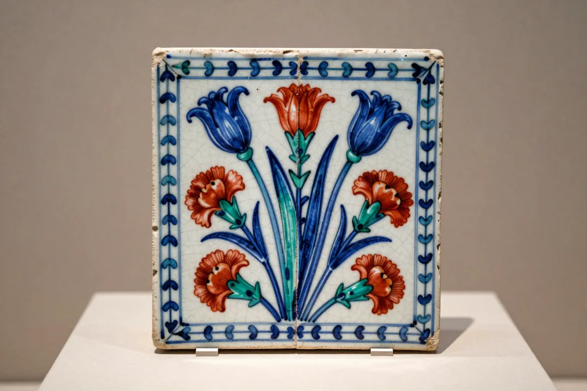

Malte veggfliser som Iznik-ovnene laget til det osmanske hoffet. Et hvitt kvartsgods tar en hvit slipp, en fri maling av blomster i kobolt, turkis, grønt og hevet rødt, og en klar glasur.

Kjerneidé
En hoffflis er en hage i glasur: maleren viser tulipaner, nellikker og blader i klare farger på hvit bunn, og glasuren gir dem dybde.
Designprinsipper
Dekk kvartsgodset med en hvit slipp, og mal så mønsteret på slippen under en klar glasur.
Trekk opp konturen i sort eller kobolt først, og fyll så formene med flat farge.
Mal blomstene fra hoffhagen: tulipan, nellik, hyasint, rose og det lange saz-bladet.
Legg det hevede røde, laget av bole-leire, på en blomst først etter omtrent 1560; hold det 0,1 til 0,3 mm tykt.
Legg til smaragdgrønt etter 1567; før det brukes bare kobolt, turkis, lilla og sort.
Sett flisene i en firkantet rapport på 25 cm, og tilpass en bort og en hjørneflis til hvert panel.
Dekk en hel vegg eller en lunette over et vindu, med mønsteret løpende over fugene.
La hvit bunn stå mellom formene; la det hvite bære omtrent en tredjedel av flaten.